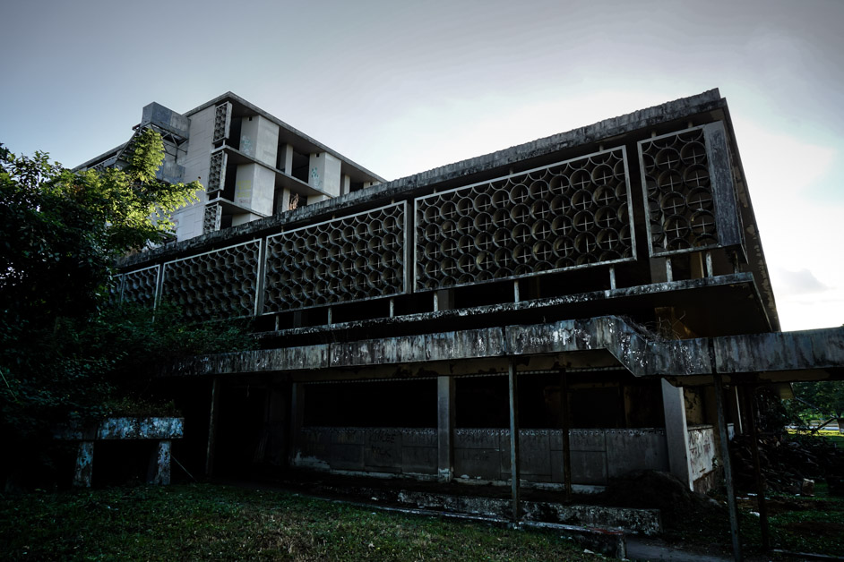
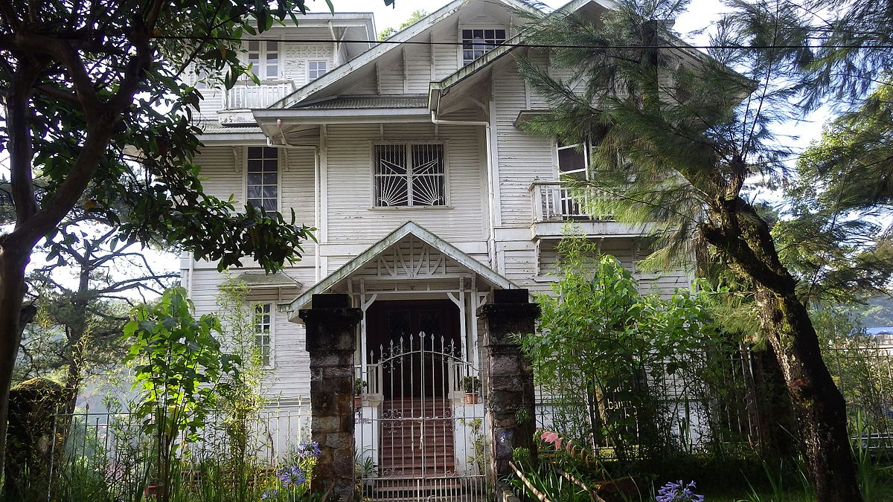
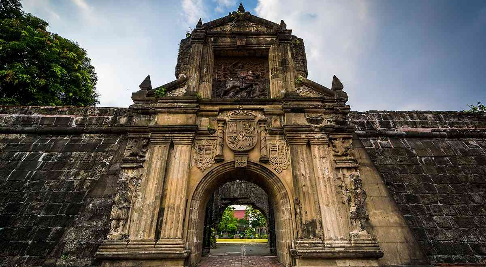

Most Visited Haunted
Places In The
Philippines
Diplomant Hotel
Diplomat Hotel is a historic building situated atop Dominican Hill in Baguio City. It once served as a rest house and a seminary way back 1911 before it was developed into a school and eventually a hotel. Despite the ruins and being abandoned, the hotel remained one of the most picturesque spots in the City of Pines. The place is known for being the most haunted building in the Philippines as it holds a dark history. Many people say that they see headless apparitions inside the hotel during nighttime. The employees and guests also stated that they often hear weird sounds coming from the edifice, including crying kids and babies near the fountain. Apart from that, the people living nearby claimed that they would hear the banging of doors and windows, clattering of dishes and voices of screaming people.
Clark Airbase
Hospital
Clark Air Base Hospital was built on the site of what used to be a United States military facility by the U.S. Air Force. Though the base itself was built and established in 1903, the hospital was not built until December of 1964 for the care of U.S. military personnel. It served as the primary healthcare facility for soldiers not just in the Philippines but all over Southeast Asia. As of 1966, the facility treated around 17,000 patients a month, while its dental services served roughly 35,000 patients.The hospital is also a favorite among ghost hunters as it is said to have housed the most tragedy and death. Many ghost hunters have vowed never to return because it was so terrifying.
Laperal White
House
The Laperal White House is an eye-snatcher along Leonard Road, just beside the allegedly equally spirit-infested Teachers’ Camp. There have been many stories. Some unfortunate passersby have seen a little girl standing motionless on the third step of the staircase that fronts the house. Some have spotted a woman looking out its glass windows. Some have heard angry voices and loud noises from inside the house even when it was completely empty. Others have claimed they had this awful feeling of being unwelcome and being watched. The guards are also terrified to go in at night.
intramuros

Intramuros is such a beautiful place to explore during the day as your eyes will not only feast on the ruins and
Spanish architecture but you’ll also learn about Philippine history.
But come nightfall, the walls of Intramuros turn into something spooky,
reminding you of the dark Spanish era.
If you can’t find a haunted house in Manila, get your horror fix at Fort Santiago,
one of the scariest places in the Philippines.
Thousands of civilians and soldiers were tortured or killed in Fort Santiago during World War II.
So, it’s just safe to say that the ghosts of the fallen civilians and soldiers patrol at night,
and some even say that you can hear the screams of the tortured and killed.